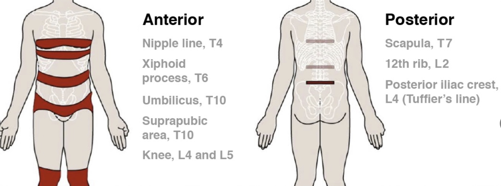
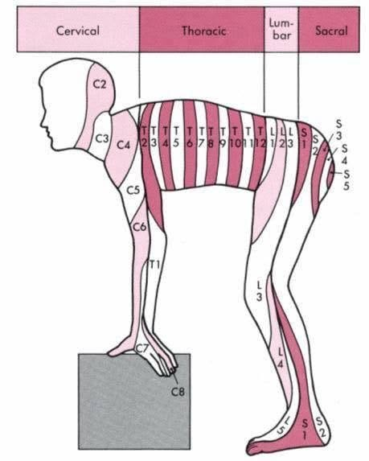

區域麻醉護理學員互動式學習平台
麻醉護理學員課後參考資源
麻醉護理師在區域麻醉中的四大角色
病人照護
- 術前評估與禁忌症確認
- 過敏史、凝血狀態確認
- 協助知情同意與衛教
- 術後疼痛評估與跌倒預防
技術協助
- 協助病人擺位
- 準備無菌器械與藥物
- 超音波設備準備協助
- 維持無菌環境
安全監測
- 生命徵象、意識狀態
- 鎮靜深度評估
- 阻斷效果與範圍
- LAST早期徵象辨識
團隊溝通
- SBAR標準化交班
- 與手術室/恢復室接班
- 異常通報與記錄
- 導管狀態追蹤
依年資分級學習目標
建立安全概念與流程熟悉度。能看懂流程、知道風險、會通報，能協助基本照護。重點：LAST辨識、無菌技術、基本監測。
獨立完成護理評估與照護流程。加強超音波影像概念、導管照護與併發症早期辨識，能完整交班。
整合全流程，具備教學與品質改善能力。特殊族群照護（兒童、孕婦、抗凝血藥）、複雜案例主導。
局部麻醉劑注入蜘蛛膜下腔（含腦脊髓液），達到快速可靠的下半身麻醉。
適用情況
- 下腹、下肢、骨科、泌尿科手術
- 剖腹產
- 手術時間 2–3 小時以內
護理重點
- 監測低血壓（最常見）
- 警惕高位脊麻（High Spinal）
- PDPH（穿刺後頭痛）
- 尿滯留
藥物進入硬膜外腔，作用較脊麻緩慢但可控制。通常以導管持續給藥，藥量約脊麻十倍。
適用情況
- 剖腹產、減痛分娩
- 長時間手術
- 術後疼痛控制
護理重點
- 導管照護與感染預防
- PDPH 風險較低但仍需注意
- 嚴重併發症：全脊麻、LAST、硬膜外血腫
超音波或神經刺激器導引下，將局部麻醉藥精準注射在感覺神經周圍。常用於四肢手術。
適用情況
- 四肢手術（精準單側肢體麻醉）
- 慢性肺病、嚴重心臟或腎功能不足患者
- 術後疼痛控制
護理重點
- 阻斷效果評估
- LAST 警戒（藥量大時風險高）
- 術後導管照護（如有留置）
適應症
- 腹部以下手術（下肢、骨科、泌尿）
- 產科剖腹產、減痛分娩
- 髖關節、膝關節手術
- 前列腺、膀胱鏡手術
- 腹股溝疝氣手術
- 術後疼痛控制
絕對禁忌症
- 病人拒絕接受
- 穿刺部位皮膚局部感染
- 明顯凝血功能異常
- 顱內壓升高
相對禁忌症
- 敗血症或菌血症
- 低血容量
- 中樞神經系統疾病
優點
- 操作時間短
- 起效快，麻醉效果可靠
- 手術中疼痛感少
- 減少全身麻醉風險
護理注意
- 監測低血壓（最常見）
- 警惕高位脊麻
- PDPH（穿刺後頭痛）
- 尿滯留
- 坐位或側臥位均可
- 確保病人舒適，預防焦慮性躁動
- 打針過程中提醒病人不要動
- 完成後緩慢協助病人改變體位
- 接受鎮靜者加強呼吸監測
優點
- PDPH 風險較低
- 可延長麻醉時間（導管）
- 可用於術後止痛
- 低血壓較少見
嚴重併發症
- 藥物誤入蜘蛛膜下腔 → 全脊麻
- 藥物誤入血管 → LAST
- 硬膜外血腫（劇烈背痛+神經缺損）
- PDPH（穿刺後頭痛）
典型症狀
- 通常麻醉後 3 天內發生
- 頭痛向額部及枕部放射
- 直立時更嚴重，仰臥緩解
- 視覺障礙、聽力減退
危險因子
- 年輕女性
- 較粗的穿刺針
- 懷孕
- 多次硬膜穿刺
優點
- 維持意識清醒（保有氣道保護反射）
- 適合慢性肺病、嚴重心臟或腎功能不足患者
- 術後疼痛控制效果好
- 減少全身麻醉用藥
缺點與注意
- 難以完全預測阻斷效果
- 取決於醫師經驗
- 需要病患配合
- LAST 風險（藥量大時）
- 開機確認探頭選擇（線陣探頭用於淺層，凸陣探頭用於深層）
- 調整深度（Depth）、增益（Gain）、焦點（Focus）
- 準備無菌探頭保護套，避免污染術野
- 協助準備超音波凝膠
- 操作結束後確認探頭清潔消毒
- 協助影像儲存（如院內規定需紀錄）
以下為示意圖，顯示脊髓麻醉感覺平面評估常用的正面皮節分布。各色帶代表對應脊髓節段。

圖片來源：Kim A, Sendlewski G, Zador E, et al. Placing a Lumbar Epidural Catheter. N Engl J Med. 2018;378(8):e11. doi:10.1056/NEJMvcm1500438。本圖僅供教學參考，非商業用途。
關鍵記憶標記
資料來源：Kim et al. NEJM 2018；Daniels et al. NEJM 2023, 2026
| 皮節 | 正面解剖標記 | 臨床意義 |
|---|---|---|
| T4 | 乳頭線（第四肋間隙） | 剖腹產及較高位需求手術（依手術型態而定） |
| T6 | 劍突水平（第六肋間隙） | 上腹部手術常見高度 |
| T10 | 肚臍水平（第十肋間隙） | 部分下腹部/骨盆手術最低要求 |
| T12 | 腹股溝韌帶中點 | 下腹部和骨盆手術 |
| L1 | 腹股溝區域（T12和L2之間中點） | 下肢手術 |
冷覺測試（最常用）
- 使用酒精棉片或冰塊
- 從下往上測試（已麻醉 → 未麻醉）
- 詢問：「這裡感覺冷嗎？」
- 記錄感覺冷的最高皮節
- 阻斷平面較高，向頭側延伸較遠
針刺測試
- 使用鈍針或牙籤
- 測試尖銳感覺
- 詢問：「這裡感覺尖銳嗎？」
- 阻斷平面通常比冷覺低 2–6 個皮節
觸覺測試
- 使用手指或棉花輕觸
- 觸覺阻斷平面最低
- 最接近手術麻醉的實際範圍
- 最能預測止血帶疼痛的發生
冷覺 ≈ 針刺 > 觸覺（最低，最接近實際手術麻醉）
此差異在麻醉消退期最明顯。
常見錯誤
- 從上往下測試（病人可能因預期給出錯誤答案）
- 只測試一側（應雙側評估）
- 測試點太少（應每個皮節都測試）
- 只用一種測試方法（建議至少冷覺＋觸覺）
溝通技巧
- 向病人解釋：「我要測試麻醉的高度，請告訴我您的感覺。」
- 使用簡單問題：「這裡冷嗎？」「這裡有感覺嗎？」
- 記錄並報告：「感覺平面在 T6（劍突水平）。」
| 手術類型 | 建議最低感覺平面 | 正面標記 |
|---|---|---|
| 剖腹產 | T4–T6 | 乳頭線 → 劍突 |
| 腹部內臟手術 | T4 | 乳頭線 |
| 下腹部手術 | T6–T8 | 劍突 → 肋緣下 |
| 膀胱/前列腺/子宮 | T10 | 肚臍水平 |
| 髖部手術 | T10 | 肚臍水平 |
| 下肢手術（使用止血帶） | T8 | 肋緣下 |
| 膝關節手術 | T12–L1 | 腹股溝 |
| 足部/踝部手術 | L1–L3 | 腹股溝至大腿 |
| 經尿道手術 | T10 | 肚臍水平 |
| 會陰部手術 | S2–S5 | 薦骨區域 |
穿刺定位標記
- L4：兩側髂骨棘（iliac crest）連線 → 腰麻最重要定位點
- C7：頸部最突出點 → 評估脊椎段數
- T7：肩胛骨下緣連線 → Epidural 注射參考
- L1：T12 肋骨邊緣往中心 10cm
- S2：後上腸骨脊
脊髓末端位置
- 成人：L1
- 新生兒：L3
- L2 以下穿刺不容易損傷脊髓（馬尾神經有活動度）
- 腰椎穿刺常在 L2–L3 或 L3–L4 間隙進行
將身體想像成前彎的姿勢：軀幹的皮節如同蛋糕層層堆疊，四肢的皮節則沿胚胎發育方向向遠端延伸。這是理解皮節分布最直觀的方式。

這張圖說明了什麼？
- 軀幹（T2–T12）：前彎後像「蛋糕層」排列，直觀呈現胸椎節段由上往下的順序
- 四肢（C5–T1、L1–S2）：胚胎期肢芽由軀幹向遠端生長，皮節沿此方向延伸——上肢從肩膀延伸到手指，下肢從鼠蹊延伸到腳
- C1 無皮節：C1 幾乎只有運動神經，無對應感覺分布
- 臉部感覺：由第五對腦神經（三叉神經，CN V）控制，非脊髓節段
- 重疊性：各皮節之間存在重疊，臨床判斷需靈活運用
口訣記憶法
實作練習建議
- 在同儕身上練習觸摸和標記這些標記
- 使用可洗掉的筆標記皮節位置
- 練習從下往上評估感覺平面
- 雙側都要測試，不能只測一側
- 在督導下反覆練習，直到熟練
不同教科書使用的皮節圖可能有差異，但關鍵臨床標記（T4=乳頭、T10=肚臍）在各版本中基本一致。
Foerster 圖（早期版本）
基於神經根切斷研究，顯示較多重疊區域。
Keegan and Garrett 圖（1948）
基於椎間盤突出壓迫神經根研究，顯示長條狀旋轉分布，許多現代教科書使用此版本。
- Kim A, et al. Placing a Lumbar Epidural Catheter. NEJM. 2018;378(8):e11. doi:10.1056/NEJMvcm1500438
- Greenberg SA. The History of Dermatome Mapping. Arch Neurol. 2003;60(1):126-31.
- Daniels AH, et al. Clinical Examination of the Cervical Spine. NEJM. 2023;389(17):e34.
- Daniels AH, et al. Clinical Examination of the Lumbar Spine. NEJM. 2026;394(13):e23.
- Rocco AG, et al. Differential Spread of Blockade of Touch, Cold, and Pinprick During Spinal Anesthesia. Anesth Analg. 1985;64(9):917-23.
- Chamberlain DP, Chamberlain BD. Changes in the Skin Temperature of the Trunk. Anesthesiology. 1986;65(2):139-43.
- Downs MB, Laporte C. Conflicting Dermatome Maps. J Orthop Sports Phys Ther. 2011;41(6):427-34.
- Lee MW, et al. An Evidence-Based Approach to Human Dermatomes. Clin Anat. 2008;21(5):363-73.
穿刺定位標記
- L4：兩側髂骨棘（iliac crest）連線 → 腰麻最重要定位點
- C7：頸部最突出點 → 評估脊椎段數
- T7：肩胛骨下緣連線 → Epidural 注射參考
- L1：T12 肋骨邊緣往中心 10cm
- S2：後上腸骨脊
脊髓末端位置
- 成人：L1
- 新生兒：L3
- L2 以下穿刺不容易損傷脊髓
- 腰椎穿刺常在 L2–L3 或 L3–L4 間隙進行
| 藥物 | 濃度 | 作用時間 | +Epi | 備註 |
|---|---|---|---|---|
| Bupivacaine (Marcaine) | 0.5–0.75% | 90–120 分 | 140+ 分 | 脊麻首選 |
| Lidocaine | 1–2.5% | 45–60 分 | 75–90 分 | 短時手術 |
| Ropivacaine | 0.5–0.75% | 60–90 分 | 80–120 分 | 替代方案 |
| Tetracaine | 0.5% | 90–150 分 | 180–300 分 | 長時間手術 |
| 藥物 | 濃度 | 起效 | 作用時間 | +Epi |
|---|---|---|---|---|
| Bupivacaine | 0.25–0.5% | 10–20 分 | 120–240 分 | 150–240 分 |
| Ropivacaine | 0.2–0.5% | 10–20 分 | 120–240 分 | 150–200 分 |
| Lidocaine | 1–2% | 5–15 分 | 60–120 分 | 90–180 分 |
| Chloroprocaine | 2–3% | 3–10 分 | 30–90 分 | 60–90 分 |
| 藥物 | 濃度 | 起效 | 作用時間 | 備註 |
|---|---|---|---|---|
| Ropivacaine | 0.25–0.75% | 10–20 分 | 240–360 分 | 首選，低心臟毒性 |
| Bupivacaine | 0.25–0.5% | 15–20 分 | 240–480 分 | 長效 |
| Lidocaine | 1–2% | 5–10 分 | 60–120 分 | 短效 |
Epinephrine 輔助
- 延長麻醉持續時間
- 減慢藥物吸收，降低血中濃度峰值
- 配方：20ml LA + 0.1ml 1:1000 Epi = 1:200,000
Sodium Bicarbonate 輔助
- 提高 pH 值，增加非離子化型態
- 加速藥物擴散，起效更快
- 配方：10ml Lidocaine + 1ml 8.4% NaHCO₃
以下五種情境取自臨床實務，點選後依照流程步驟思考應對方式。
記錄重點
Block 範圍：麻到 T10？T4？藥物種類與劑量
後續監測：BP 是否回升、症狀緩解情形
神經系統表現（先出現）
耳鳴、金屬味、口周麻木、頭暈、視力模糊
躁動、意識改變、抽搐、震顫
昏迷、呼吸停止
心血管毒性（嚴重）
- 低血壓、心律不整
- PR 間期延長
- QRS 波持續時間增加
- 竇性心搏過緩
- 心搏停止
優先處理氣道！
維持劑量：0.25 ml/kg/min；症狀穩定後仍持續至少 15 分鐘
最大總量：12 ml/kg
確認院內脂肪乳劑存放位置！
| 能力項目 | 學員應達成內容 |
|---|---|
| 早期辨識 | 能說出 LAST 的早期神經（耳鳴、金屬味、口周麻木）與心血管（低血壓、心律不整）徵象 |
| 通報與啟動 | 能立即通知麻醉醫師並啟動急救支援，記錄症狀開始時間 |
| 急救準備 | 知道 20% Lipid Emulsion 存放位置，能準備急救設備 |
| 團隊協作 | 能在模擬情境中清楚分工，回報時間點與給藥資訊 |
| 紀錄能力 | 能記錄症狀開始時間、藥物劑量、急救處置與生命徵象變化 |
常規監測
阻斷評估
| 分級 | 狀態 | 臨床說明 |
|---|---|---|
| 1 | 清醒、焦慮躁動 | 無鎮靜 |
| 2 | 清醒、合作平靜 | 輕度鎮靜（目標） |
| 3 | 嗜睡但對指令有反應 | 中度鎮靜（目標） |
| 4 | 深睡，可被叫醒 | 偏深，注意呼吸 |
| 5 | 對刺激反應遲鈍 | 過深，需干預 |
| 6 | 對刺激無反應 | 過度鎮靜，緊急處理 |
- 持續麻木或無力（超過預期恢復時間）
- 劇烈背痛伴隨神經症狀（排除硬膜外血腫）
- 呼吸困難、胸悶、意識改變
- 導管敷料滲濕、導管滑脫
- 阻斷範圍異常擴大
- 穿刺部位紅、腫、熱、痛、膿
可依實際情況調整。
- 即時：事件發生後盡快記錄
- 客觀：記錄觀察到的事實，非推測
- 完整：不遺漏重要項目
- 可追溯：清楚時間軸
必要記錄內容
- 執行時間、阻斷部位
- 使用藥物與總劑量
- 生命徵象與變化趨勢
- 病人主訴、鎮靜程度
- 併發症、醫師通知時間與處置
共 10 題，完成後顯示成績與解說。